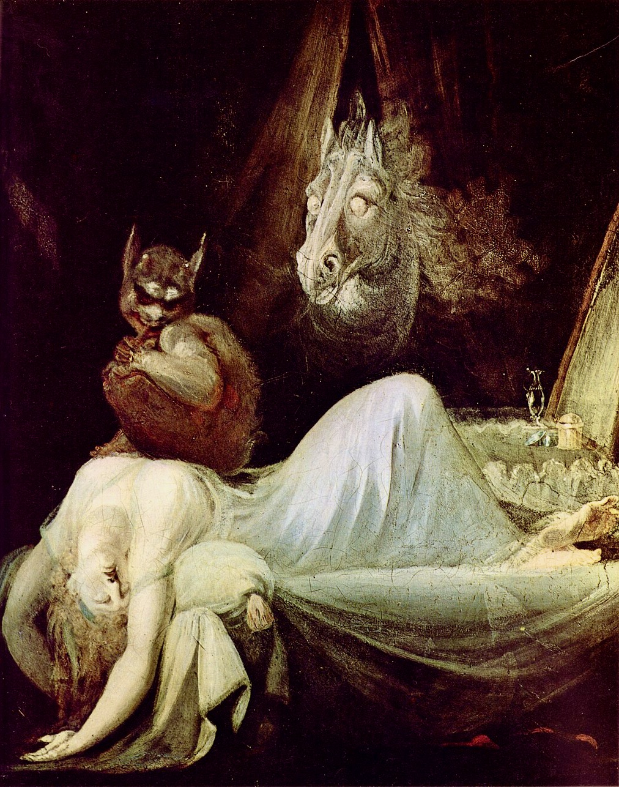
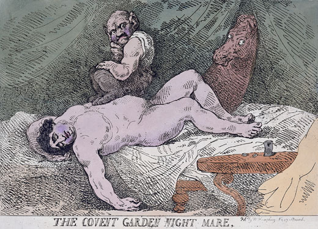
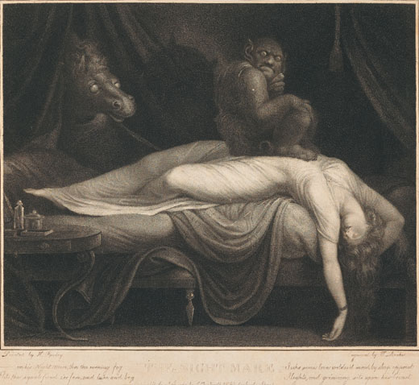

Piccolo inventario degli spiritelli più adusi alla frequentazione delle località dei Castelli Romani.
I folletti sono di casa in tutta Italia: capricciosi, bizzarri e inafferrabili zampillano qua e là sulla carta geografica con caratteri simili e diversi al tempo stesso, che si mescolano e si intrecciano da un paese all’altro, da una regione all’altra, che a volte scompaiono e a volte riaffiorano, come seguendo un ritmo musicale: a Trieste troviamo il cinciùt che pesa sul petto dei dormienti, proprio come il laùro di Taranto, lo scicuddi di Galatina e il bafardèllo della Garfagnana che però diventa anche aereo e, abitando i vortici del vento, crea mulinelli di foglie; c’è il mazzimarièglie di Canzano, in provincia di Teramo, che, mazza in mano, sta a guardia di un tesoro, come i monachicchi lucani descritti da Carlo Levi, che conoscono i luoghi dei tesori ma non li rivelano. E tanti, tanti altri, a volerli solo nominare, in una lunga fila vivace, movimentata, di saltelli, burle, fughe, di improvvise apparizioni e sparizioni. Il mondo dei folletti è un mondo musicale, danzante.
Tutti imprevedibili, dispettosi, fanno smarrire la strada, nascondono gli oggetti, alzano le coperte dal letto e le gonne delle donne, tirano i capelli, disfanno la calza o la tela, mescolano il sale con lo zucchero e rovesciano i secchi del latte, combinano insomma piccoli guai di ogni genere. Pochi rivelano aspetti crudeli: penso al matharòl delle montagne bellunesi che porta via i bambini e li nasconde in grossi cespugli irti di spine, da cui riescono a uscire solo dopo tre giorni, o al gamberòl, sempre del Bellunese, che taglia le gambe ai bambini che vanno a rubare le fave nei campi. Eppure gli stessi, assimilati all’Uomo Selvatico, hanno insegnato l’arte casearia, e a volte si occupano con la massima cura di capre o di pecore, ma guai a scoprirli: sono capaci di decimare il gregge. Tutti e due, sfruttando le loro straordinarie capacità metamorfiche, possono diventare un gomitolo o una matassina di filo: le donne lo vedono, lo raccolgono e se lo mettono in petto. E loro si godono il tepore erotico dei seni.
A volte possiedono caratteristiche in comune con le streghe: nel Bellunese possono far uscire i cavalli dalle stalle e farli spossare; in Garfagnana, intrecciano le code delle mucche e dei cavalli, fanno cadere i bambini dal letto, e, in qualche paese, sono costretti anche loro a contare, ma, essendo più irrequieti delle streghe, si stancano e se ne vanno: il linchetto di Castelnuovo Garfagnana si mette a contare le bacche o le foglioline di un ramo di ginepro che i più avveduti hanno legato dietro alla porta di casa, ma si accorge che l’impresa è lunga e se ne va.
In un simpatico racconto, riportato nel libro Magia e folletti in Garfagnana di Oscar Guidi, un linchetto deve addirittura raddrizzare tutti i peli del pube di una sposa che, angariata la prima notte di nozze, gli suggerisce questo lavoro di pazienza. L’irrequieto folletto, all’idea di questo lungo impegno, si spaventa e si allontana per non tornare mai più.
I colori dei vestiti variano: per citarne qualcuno, caratteristici il matharòl e il gamberòl del Bellunese vestiti completamente di rosso, mentre il noto munaciéllo napoletano, più volte citato nel Pentamerone di Giambattista Basile – che nella traduzione di Benedetto Croce viene detto monachetto – può indossare un piccolo saio, come il monachiéllu di Lamezia Terme che porta via i bambini nella viértola, la bisaccia, oppure, secondo Benedetto Croce, è vestito da chierichetto con lo zucchetto rosso; Matilde Serao ne Il ventre di Napoli lo dice vestito di nero se porta disgrazia, di rosso se porta fortuna. Lo scazzamurridde di Cerignola, alto come il palmo di una mano, che, fra l’altro, ha il difetto di saltare sulla pancia dei dormienti, indossa una giacchetta scarlatta, a differenza del baffardèd di Carrara che è coperto di peli; ma lo stesso baffardèd, a Forno nelle Alpi Apuane, è vestito di verde, per meglio confondere i bambini e farli smarrire fra gli alberi fitti dei boschi dietro al suono di un campanello.
Il berretto rosso – cuoppulicchiu russu a Umbriatico in Calabria – si può considerare una costante, quasi tutti lo indossano e tutti stanno ben attenti a non farselo togliere, sia rosso o meno: perderebbero ogni potere. Addirittura alcuni dei folletti sardi, fra i quali l’ammattadore, ricordato da Grazia Deledda in Canne al vento, ne indossano sette, uno sull’altro, nei quali nascondono tesori.

Pensando ai Castelli Romani, viene spontaneo immaginare che nei paesi più alti, arroccati sui Colli Albani che una volta erano completamente circondati dai boschi, Rocca di Papa e Rocca Priora in particolare, abbiano trovato dimora intere famiglie di folletti, come in molti altri paesi che dai boschi sono circondati. Al contrario: nell’immaginario collettivo di questi due paesi nessun folletto ha mai avuto l’onore di una storia. Ma, si sa, i folletti sono burloni. Così un folletto del bosco spunta ad Albano, paese soprattutto di vigne e di orti: è il lénghelo o lengoletto del bosco per distinguerlo da quello delle case e delle vigne, detto semplicemente lengoletto. Folletto cattivo, arcigno quello del bosco, a quanto pare, perché confonde i sentieri agli esseri umani proprio come i folletti delle Alpi, e spaventa gli animali che ci vivono. Quando il bosco è cupo e silenzioso, quando gli uccelli non volano e non cantano, né si incontrano animali, è segno che quello è il territorio di un lénghelo.
Quello delle case di Albano è il classico folletto dell’immaginario comune, dispettoso e onnipresente, anche se invisibile: fa smarrire chiavi e soldi, fa versare il latte dal fuoco, che bianco schiuma fuori dal bollilatte e puzza; se si rovesciano il sale o l’olio, è sempre colpa del lengoletto; i panni stesi al sole si macchiano: altro tiro del folletto; colpi improvvisi: è sempre lui. Persino lo sciame sismico, nel passato comune nei Colli Albani, era opera del lengoletto. Utilissimo come spauracchio per i bambini che la sera si fermavano a giocare per la strada e mai sarebbero voluti rientrare. Le madri, che ci credessero o meno, tiravano fuori il folletto: «Mo’ viè ’o lengoletto», e i bambini correvano a casa con una gran paura e oggi ricordano questo momento della loro infanzia con particolare vivezza. […]
Dunque, invece che nei paesi dei Castelli Romani che potremmo quasi definire montani, arrampicati sui colli e una volta chiusi nel verde dei boschi, è proprio nei Castelli più pianeggianti che si ritrovano spiritelli e folletti, che però non vengono mai chiamati folletti in quanto tali, ma con il loro nome locale: lénghelu a Marino, léngheru neru a Grottaferrata, lengheretto ad Ariccia, ìndico a Velletri.
Questi piccoli esseri fantastici hanno rivestito un ruolo importante nei racconti serali e molti uomini e donne hanno avuto – e hanno? – una precisa idea della loro presenza. Nei Castelli i loro nomi variano di poco da un paese all’altro, cambiano soprattutto le caratteristiche – a volte anche nell’ambito di uno stesso paese – così che ogni persona ha il piacere di raccontarsi la propria storia, come se questi invisibili ometti, dalla natura cangiante, follettesca per così dire, esistano per dare avvio a racconti differenti, rendendosi inafferrabili persino dalle parole.
È il caso del lénghelu di Marino. Chiedendo ai marinesi, a caso, informazioni del loro lénghelu, vengono fuori notizie varie, discordanti: «è un uomo alto, magro, brutto, vestito male… è alto, magro, di pelle un po’ scura… è malvestito, sporco… è una specie di fantasma… è magro, alto e pallido… fa paura… è cattivo, aggressivo, gli piace menare». Perciò si dice familiarmente «Me pari ’n lénghelu» quando una persona è spettinata, malvestita oppure magra e pallida.
Lo scrittore Enrico Capolei ha invece del lénghelu un’immagine nettissima, precisa, ricavata dai racconti dei nonni e dei vicini di casa dagli anni dell’infanzia: u lénghelu è una specie di nano che ama abitare nelle case con i solai di legno, che possibilmente abbiano anche una scala di legno con dodici gradini – non uno di più né uno di meno. Il suo grande divertimento è quello di scendere e salire queste scale in modo da far risuonare il suo tipico zoccolìo: calza infatti zoccoli di legno. Il vestito è marrone, in armonia con il colore del legno, con un gilè marrone e berretto dello stesso colore.
Qualcuno racconta di averlo sentito spaccare grossi ciocchi durante la notte e, la mattina dopo, ecco che trova un mucchietto di legna ben tagliata vicino al focolare. U lénghelu è difatti un folletto piuttosto buono che si fa vedere raramente e solo a persone che gli sono simpatiche. Ai bambini però quello scricchiolio delle scale incuteva terrore e mai avrebbero voluto salirci di notte (sullo scricchiolio delle scale il pensiero dei marinesi è concorde e anche sulla paura che incuteva). E pure comune è l’idea che sia amante del legno, tanto che – si dice – poteva stabilire la sua dimora fra i fascetti di un fornaio, da cui forse è nata l’immagine dei vestiti sporchi.
Nel passato si è favoleggiato anche di una pentola di monete d’oro che u lénghelu poteva far trovare, ma questa tipica storia del ritrovamento di un tesoro sembra appartenere a un lontano passato. […]
Un parente del lénghelo albanense è di casa ad Ariccia: qui si chiama ’o lengheretto, con una erre in mezzo, a cui gli ariccini tengono molto. Mario Leoni nel suo libro sul dialetto di Ariccia, nella parte dedicata al vocabolario, lo definisce così: «Spiritello benigno con sembianze di bambino che, in altri tempi, si aggirava per la casa facendo dispetti».
’O lengheretto viene infatti ricordato simile a un bambino che appare e scompare, con in testa un cappelletto rosso a punta. Nel passato qualche donna lo vedeva nella sua cucina trafficare con le pentole, ma non ne aveva paura, anzi diceva che le faceva compagnia. La notte però ’o lengheretto diventava fastidioso a causa di questa sua passione per le pentole e per i rumori metallici in genere: si divertiva a fare chiasso sbattendo tegami e coperchi nelle camere da letto, e così, di colpo, spezzava il sonno a tutti gli abitanti della casa che, maledicendolo, tentavano invano di riaddormentarsi. Oppure ’o lengheretto saltava sulla pancia dei dormienti o sul letto che tretticheva, tretticheva (ballonzolava), non facendo ugualmente dormire.
Tuttavia, per non smentire il carattere tipico dei folletti che a volte sono benevoli e generosi con chi gli è simpatico – non volendo però che questa loro generosità venga rivelata – si racconta che un lengheretto abbia beneficato a lungo un calzolaio, facendogli trovare ogni giorno qualche lira in più nel cassetto dove riponeva il suo misero guadagno quotidiano.
Il calzolaio, grato al folletto, sapendo bene che non doveva confidare a nessuno quello che succedeva in casa, tenne la bocca chiusa per parecchio tempo, ma poi, non resistendo più a lungo, lo disse con un fil di voce nell’orecchio della moglie, la moglie nell’orecchio di una vicina, la vicina nell’orecchio di un’altra. Tutti sottovoce e in gran segreto, ma non abbastanza da non farsi ascoltare dal folletto. Così ’o lengheretto si indispettì e non moltiplicò più le lire. E ancora oggi viene indicata la casa dove avvenne il fatto.
Notizie dettagliate del léngheru neru di Grottaferrata me le ha comunicate Filippo Roncaccia, che le ha ascoltate dalla prozia del padre, signora Amalia Taucci, nata nel 1884. Il ricordo delle parole della prozia è vivissimo: u léngheru neru ha la sua dimora nel torrione dell’Abbazia di Grottaferrata, dove è nascosto un prezioso tesoro. Alto circa cinquanta centimetri, è ricoperto da una folta peluria nera e indossa un berretto verde con stelle dorate.
Per impadronirsi del tesoro, custodito da u léngheru neru, bisogna calarsi con una corda nel torrione la notte di Natale, e solo quella notte, armati soltanto di una candela. E non è tutto: la persona – uomo o donna che sia – deve chiamarsi con un nome che ricorda il Natale e cioè Natalino o Natalina, Natalia oppure proprio Natale.
Una volta che il tal Natalino è sceso nel torrione, deve accendere la candela e cercare u légheru neru, restando in completo silenzio alla vista del folletto – non una esclamazione, non un grido –, poi velocemente deve sfilargli il magico berretto. A questo punto dovrebbe sparire u léngheru e apparire il tesoro, ma, al primo inevitabile grido, u légheru, più svelto dei vari Natale, Natalina e Natalia, soffia sulla candela. Nel buio spariscono léngheru neru e tesoro.
E anche nel ricordo u léngheru neru, come custode del tesoro, è quasi scomparso. è piuttosto generalmente ricordato dispettoso e indisponente, e senza alcun tesoro come tutti i suoi cugini. Oltre a produrre i soliti rumori e sparizioni di oggetti, può pesare sul petto di una persona che dorme, le può tirare i piedi o farle la pipì nelle scarpe; in particolare se la prende con le candele, che si diverte a spegnere con un improvviso tacito soffio, ma, per non smentire il carattere capricciosamente benevolo di tutti i folletti, a volte dà un aiuto a non spegnerle.
Amelia Taucci Ferretti, lontana nipote dell’Amalia Taucci della storia del tesoro nel torrione, mi ha raccontato un incontro di suo nonno col léngheru neru: il nonno era sceso in cantina per spillare il vino da una botte, tenendo in mano una candela accesa. Arrivato giù, si rese conto che, per il lavoro che doveva fare, le mani gli servivano tutte e due, e rimase un momento immobile, incerto su dove appoggiare la candela. Si disse a fior di labbra: «E ora dove la metto?». Una vocetta gli fu d’aiuto: «Ficcala qua», sussurrò, facendogli cadere lo sguardo su una rientranza del muro.

L’ìndico di Velletri è di tutt’altra natura dei vari léngheli, lengheretti, léngheri neri, e diverso anche nel nome. Chi lo fa derivare da indaco, da cui il colore azzurro del vestito, chi – come il poeta dialettale Giulio Montagna – fa dell’origine del nome un’interessante ipotesi, che evoca scene campestri: «Quello che più mi intriga», mi ha scritto, «è éndice o guardanido, che in italiano sta a indicare l’uovo vero o finto che le contadine lasciano nel nido del pollaio, per indicare alle galline che è lì che debbono andare a deporre le uova. Per corruzione dialettale l’éndice è probabilmente diventato endicio, poi enicio e endico. Dall’endico all’ìndico il passo è breve».
La maggior parte dei velletrani – compreso Roberto Zaccagnini, autore del libro sulle tradizioni velletrane – è però dell’idea che il nome ìndico derivi direttamente dall’incubus romano: fa parte, infatti, della vasta schiera di folletti-incubo che si ritrovano qua e là, a macchia di leopardo, in tutta Italia, naturalmente con nomi diversi e sfumature di carattere differenti, ma per tutti rimane costante il divertimento, il piacere di appoggiarsi pesantemente sul petto dei dormienti, producendo l’incubo notturno.
Incubo ricordato anche da Dante nell’XI Canto del Purgatorio, quando, in una mirabile sintesi poetica, assimila il gravoso masso, che le anime dei superbi sono costretti a portare, alla penosa sofferenza dell’incubo: […] «quell’ombre orando, andavan sotto il pondo/ simile a quello che talvolta si sogna» (vv. 26-27) […]. L’ìndico quindi pesa sul petto o sullo stomaco del dormiente, quasi lo paralizza: il respiro della persona presa di mira diventa affannoso e un sudore freddo le stagna sul corpo, non riesce a liberarsi dall’oppressione. è appunto l’incubo, che a volte anche altri folletti dei Castelli procurano, ma per l’ìndico si tratta di una caratteristica essenziale, specifica. Pesa, pesa molto senza essere però mai lascivo (nessuno dei Castelli lo è), a differenza di molti altri folletti oppressivi: penso al laùro tarantino che, a detta di Luigi Giuseppe De Simone, sente il pizzicor d’amore, o al mazzapègul romagnolo e al karket del Biellese. Tutti e tre prediligono raggomitolarsi sul corpo delle donne, specialmente di quelle giovani e belle, e le turbano con desideri erotici, cercando di possederle.
Difficile descrivere l’aspetto dell’ìndico: pare sia piccolo, quasi nano; alcuni lo dicono vestito con giacchetta e calzoncini azzurri, altri non sanno definire il colore dell’abito, ma il berretto è sicuramente rosso; altri ancora lo vedono agilissimo e peloso come una scimmia, ma sempre con il copricapo rosso. Se gli si strappa il berretto dalla testa, qualcuno afferma che si mette a piangere, non riuscendo più a uscire dalla stanza. Per farlo uscire bisogna restituirglielo, allora se ne va.
A Lariano sempre di ìndico si parla, ma con aspetto diverso: è piuttosto un piccolo fantasma, quasi trasparente, svelto, veloce, che però anche qui ha il vizio di pesare sul torace della persona che gli è antipatica, soprattutto se non crede alla sua esistenza.
A Colonna troviamo uno spiritello di nome limbu, e pesa anche lui. Il nome fa chiaramente pensare alle anime dei bambini morti senza battesimo, ma siccome vengono ancora usate le espressioni «Me pari ’n léngheru, me pari ’n léncaru» rivolte a persone trasandate, spettinate, è probabile che si tratti di un folletto cugino di quelli degli altri Castelli, ma che incarni le anime dei neonati morti senza battesimo, in una credenza comune ad altre regioni.
Simile ambiguità ritroviamo a Genzano: la sensazione dell’oppressione notturna è detta léngheru: per alcuni è procurata dalle Anime del Purgatorio che vengono a trovare i vivi, per altri è una specie di nanetto che pesa soprattutto sui bambini.
Per evitare l’ìndico, e probabilmente anche u limbu e u léngheru di Genzano, più che di rimedi, si può parlare di una specie di prevenzione, come per le malattie. È bene non dormire supini, oppure, se proprio non se ne può fare a meno, almeno incrociare le mani sul petto.
Eppure, in una breve storia velletrana, l’ìndico, abitualmente greve, opprimente, diventa agilissimo e leggero, capace di cavalcare i soffi del vento: “Una famiglia di Velletri da tempo subiva gli scherzi, le piccole cattiverie di un ìndico, che si era stabilito in casa. Era diventato tanto insopportabile che il capofamiglia, d’accordo con la moglie, decise di cambiare abitazione. Ma era indispensabile farlo di nascosto, altrimenti l’ìndico li avrebbe seguiti. Così una mattina, in fretta, caricarono le poche masserizie su un carretto e si prepararono ad andarsene senza salutare nessuno. Però, nel momento in cui, chiusa la porta, stavano salendo sul carretto, una vicina curiosa chiese il motivo di questa improvvisa partenza. La moglie glielo disse più volte sottovoce, ma la vicina era sorda e, non riuscendo a comprendere, insisteva nelle domande. Allora la donna, che voleva andarsene al più presto, alzò la voce. A questo punto dal campanile della chiesa di fronte si udirono due tocchi di campana: era l’ìndico che attaccato al batacchio disse forte: «Traslochemo, commà, cambiemo casa!».”

Tratto da: Roma Lister, Leggende classiche e superstizioni dei Castelli Romani, a cura di Stefano Paolucci, con contributi di Maria Pia Santangeli e Ugo Onorati, pp. 56-67, Passamonti 2024 (già su Maria Pia Santangeli, Streghe, spiriti e folletti. L’immaginario popolare nei Castelli Romani e non solo, Edilazio 2013 - esaurito).
Illustrazioni: Johann Heinrich Füssli, The Nightmare (olio su tela, m 1,02 x 1,27), 1781; Thomas Rowlandson, The Covent Garden Nightmare (stampa), 1784; Thomas, Burke (incisione), The Nightmare, 1783.